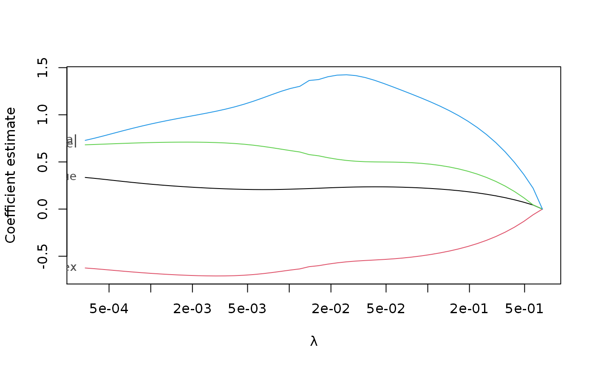
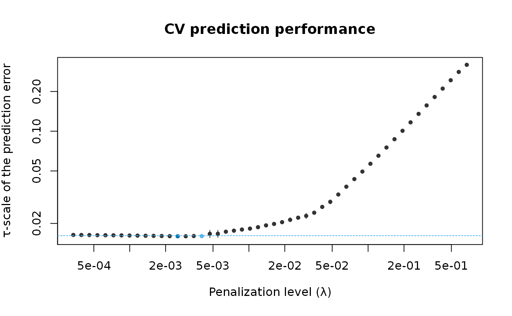

Plot Method for Penalized Estimates With Cross-Validation
Source:R/plot-methods.R
plot.pense_cvfit.RdPlot the cross-validation performance or the coefficient path for fitted penalized elastic net S- or LS-estimates of regression.
Arguments
- x
fitted estimates with cross-validation information.
- what
plot either the CV performance or the coefficient path.
- alpha
If
what = "cv", only CV performance for fits with matchingalphaare plotted. In casealphais missing orNULL, all fits inxare plotted. Ifwhat = "coef.path", plot the coefficient path for the fit with the given hyper-parameter value or, in casealphais missing, for the first value inx$alpha.- se_mult
if plotting CV performance, multiplier of the estimated SE.
- ...
currently ignored.
See also
Other functions for plotting and printing:
plot.pense_fit(),
prediction_performance(),
summary.pense_cvfit()
Examples
# Compute the PENSE regularization path for Freeny's revenue data
# (see ?freeny)
data(freeny)
x <- as.matrix(freeny[ , 2:5])
regpath <- pense(x, freeny$y, alpha = 0.5)
plot(regpath)

# Extract the coefficients at a certain penalization level
coef(regpath, lambda = regpath$lambda[[1]][[40]])
#> (Intercept) lag.quarterly.revenue price.index
#> -23.9028248 0.1198500 -0.4955058
#> income.level market.potential
#> 0.4144162 2.4357470
# What penalization level leads to good prediction performance?
set.seed(123)
cv_results <- pense_cv(x, freeny$y, alpha = 0.5,
cv_repl = 2, cv_k = 4)
plot(cv_results, se_mult = 1)

# Print a summary of the fit and the cross-validation results.
summary(cv_results)
#> PENSE fit with prediction performance estimated by 2 replications of 4-fold ris
#> cross-validation.
#>
#> 4 out of 4 predictors have non-zero coefficients:
#>
#> Estimate
#> (Intercept) -16.3437416
#> X1 0.1769018
#> X2 -0.5800804
#> X3 0.5152704
#> X4 1.7991073
#> ---
#>
#> Hyper-parameters: lambda=0.004700238, alpha=0.5
# Extract the coefficients at the penalization level with
# smallest prediction error ...
coef(cv_results)
#> (Intercept) lag.quarterly.revenue price.index
#> -16.3437416 0.1769018 -0.5800804
#> income.level market.potential
#> 0.5152704 1.7991073
# ... or at the penalization level with prediction error
# statistically indistinguishable from the minimum.
coef(cv_results, lambda = '1-se')
#> (Intercept) lag.quarterly.revenue price.index
#> -5.0900585 0.1807610 -0.3989357
#> income.level market.potential
#> 0.4192179 0.9172138